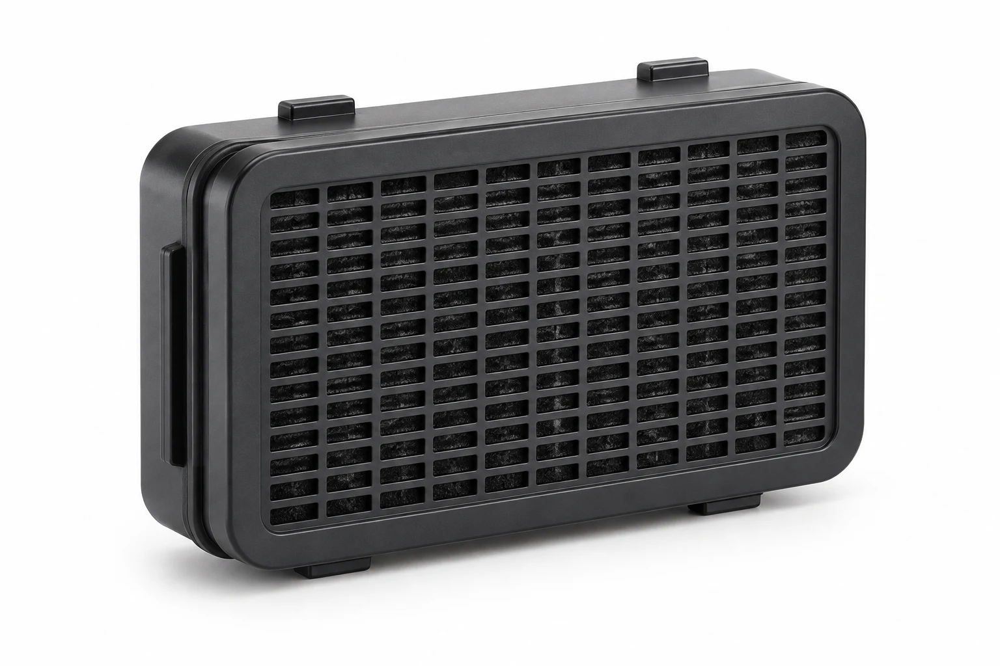
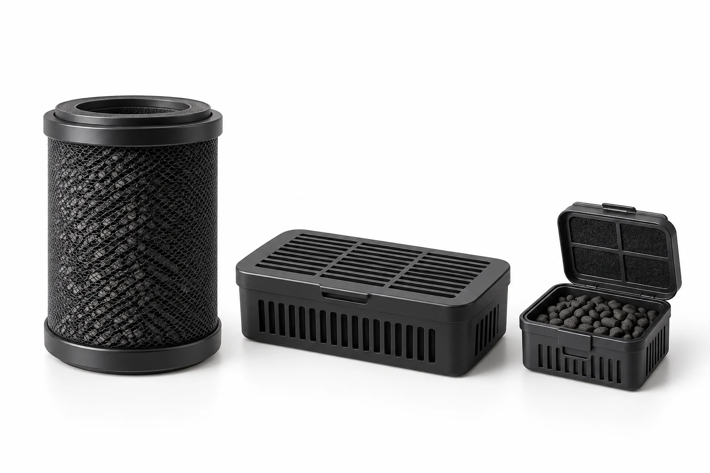

음식물처리기 탈취필터
음식물처리 과정에서 발생하는 복합악취를 효과적으로 제거
FOOD-WASTE PROCESSOR FILTER음식물 처리방식과 복합 냄새 성분을 분석하고, 장착공간과 풍량에 맞춰 흡착소재와 필터 구조를 설계합니다.
음식물처리 과정에서 발생하는 복합악취를 효과적으로 제거

제품 모델·장착공간·풍량에 맞춘 구조와 소재 설계

고객 요구사양 기반의 개발부터 양산까지 원스톱 지원
음식물 처리방식 · 풍량 · 온도 · 습도 · 발생 냄새 특성 분석
목표 악취성분과 사용조건에 적합한 활성탄 및 흡착소재 선정
장착공간 · 압력손실 · 활성탄 충전량 · 공기 접촉시간 등을 고려한 구조 설계
고객 제품에 적용 가능한 맞춤형 필터 시제품 제작
탈취성능 및 사용조건을 평가하여 필터 사양 최적화
확정된 사양을 기준으로 안정적인 품질의 필터 생산
음식물처리 과정에서 발생하는 복합 냄새 성분을 효과적으로 흡착합니다.
배출 공기를 정화하여 주방과 생활공간의 쾌적함을 유지합니다.
제품 구조와 사용환경에 맞춰 필터 사양을 최적 설계합니다.
원재료부터 완제품까지 체계적인 품질관리로 균일한 성능을 보장합니다.
주방에서 사용되는 소형 음식물처리기의 탈취필터
건조·분쇄 과정에서 발생하는 냄새를 제거하는 필터
미생물 분해 과정의 복합 냄새에 대응하는 필터
대용량·고풍량 처리 환경에 적합한 탈취필터
음식물 감량·탈취 설비의 맞춤형 흡착 필터
암모니아(NH₃)·황화수소(H₂S) 등 복합 냄새 성분과 운전조건을 검토하여 활성탄 및 기능성 흡착소재를 선정합니다.
풍량·온도·습도·장착공간을 고려해 압력손실, 충전량과 공기 접촉시간을 함께 검토합니다.
층 구성 개념도 · 제품별 사양 상이
다양한 필터 소재와 흡착소재를 단계별로 조합해 음식물처리기의 복합악취에 대응합니다.
먼지 및 입자성 물질 포집
활성탄을 이용한 주요 냄새 성분 흡착
목표 악취성분에 적합한 기능성 흡착소재 적용
복합 악취에 대응하기 위한 탈취층 구성
잔여 냄새 및 미세 입자를 고려한 최종 필터링
제품의 처리방식·풍량·온도·습도·사용환경에 따라 소재·구조·두께·충전량 및 필터 단수를 선택적으로 구성합니다.

미세 기공이 발달한 고품질 활성탄으로, 초기 정화 속도가 빠르고 넓은 비표면적을 통한 강력한 물리적 흡착을 제공합니다.


공기청정기 협회 규격(CA) 기준 5대 유해가스에 최적화된 맞춤형 화학 첨착 소재입니다.

알칼리 기반 촉매탄으로 일반 활성탄으로 제거가 어려운 산성가스 및 악취성분을 화학적으로 흡착하는 소재입니다.


균질한 미세 기공 구조를 통해 공기청정기 필터에서 암모니아 등 특정 유해가스와 저농도 악취를 선택적으로 정밀 제어하는 고순도 소재입니다.
사용 환경과 요구 성능을 함께 검토하여 적합한 제품과 공정을 제안합니다.